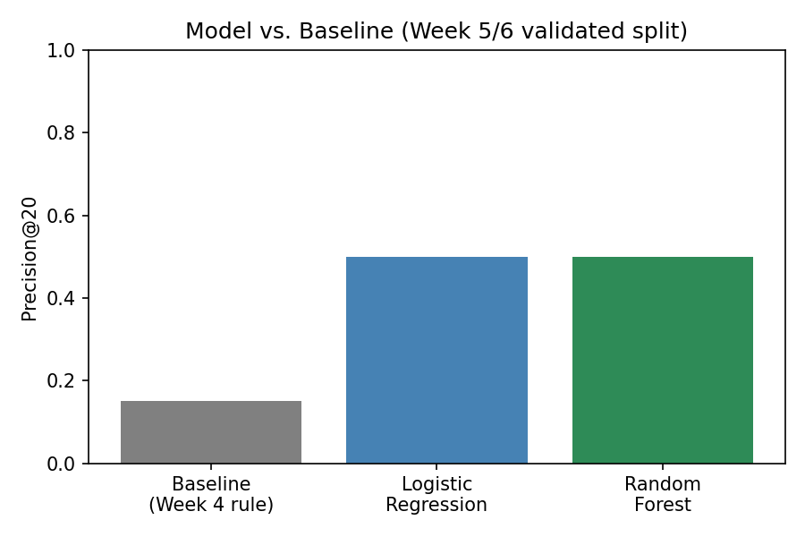
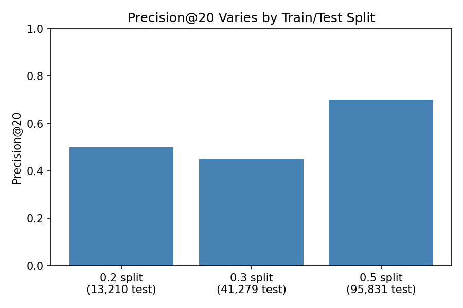
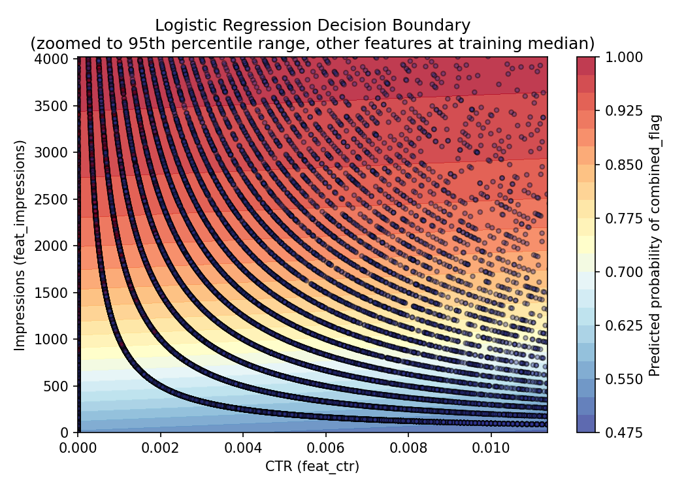
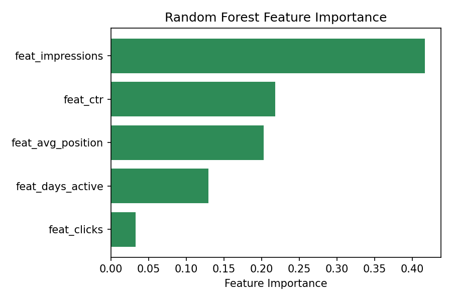
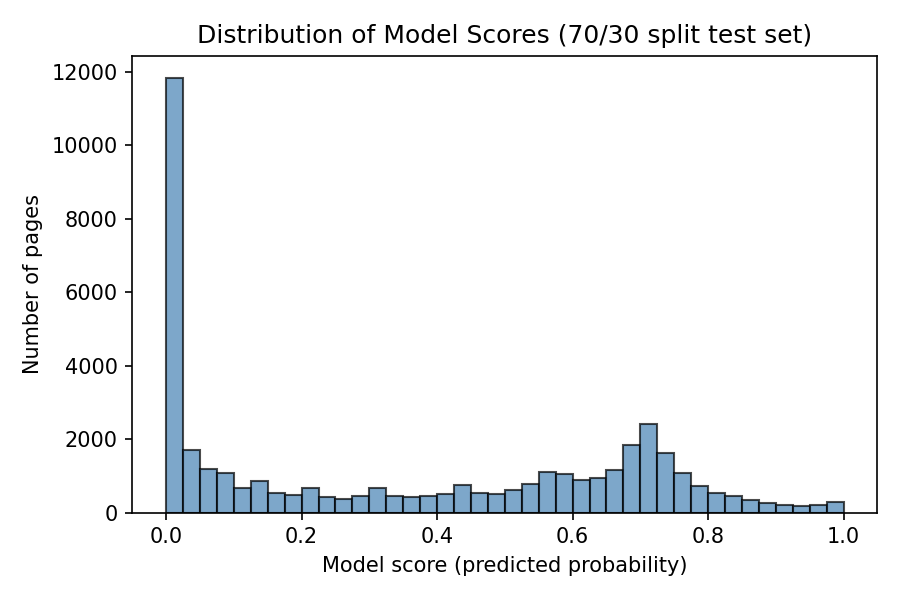

FlyRank's content operations, serving dozens of clients at once, need a way to decide which pages require the most urgent CTR fix first, out of thousands with real search visibility but weak clicks, and today that decision is usually made by gut feel rather than evidence. This project builds and validates a scoring model on one month (March 2026) of FlyRank's real, multi-client search-performance warehouse, comparing a transparent hand-written baseline against Logistic Regression and Random Forest classifiers trained on five leakage-checked features. Evaluated with a client-held-out split and Precision@20, both models roughly triple the baseline's accuracy (0.15 → 0.45–0.50 typical, up to 0.70 on some splits, precision varies meaningfully by which clients are held out), though the two models agree on zero of the same top-20 picks despite matching accuracy. Error analysis shows the gain comes almost entirely from detecting CTR mismatch, not from predicting genuine traffic decline, since none of the five features capture change over time. The result is a ranked, reason-coded action playbook with tier-aware recommendations (rewrite, review-first, or verify) intended strictly as a decision-support tool for human content reviewers, not an automated publishing system.
FlyRank manages search content for dozens of clients simultaneously, and its own operations face exactly this bottleneck: with thousands of client pages across the portfolio (44 clients represented in this March 2026 slice alone), no reviewer can manually check every page every week. Someone has to decide, out of thousands of pages, which ones to look at first, today that decision is usually made by gut feel or a spreadsheet sorted on one column.
This project asks a narrower, testable version of that question: which pages get real search visibility but fail to earn clicks relative to how other pages in the same position tier perform, and does a trained model do a better job answering that than a simple rule?
The decision this supports: a content reviewer or SEO analyst opening a ranked queue and deciding which page's title to rewrite first. The unit of analysis is one page, scored using its own trailing search performance. Getting this wrong is not symmetric: flagging a healthy page wastes a reviewer's limited time; missing a genuinely underperforming page lets it keep losing traffic, unnoticed, for another cycle. That second failure compounds daily and is treated as the costlier mistake throughout this work.
A flat rule ("flag if CTR < X") doesn't hold up under its own data: what
counts as a "normal" click-through rate varies meaningfully by how well a page already
ranks. A page at position 3 and a page at position 40 need different bars for what
counts as underperforming, which is the actual justification for reaching past a
single threshold toward a model that can weigh several signals in context.
This analysis uses one month (month=2026-03) from
FlyRank's fact_content_daily_performance table, part of the
FlyRank/internship-warehouse release on Hugging Face, a table that
spans roughly 79 million rows across January 2025–June 2026
in total. March was chosen deliberately as a mid-panel month, per the program's own
data-access guidance, leaving June 2026 sealed as an untouched final test period never
used to develop any label or feature logic here.
Grain was verified empirically, not assumed: grouping by content_hash_id,
client_hash_id, and report_date and checking for duplicate
combinations returns zero rows, confirming one row is genuinely one page's performance
on one day for one client.
gsc_data_available IS NOT TRUE)
, roughly two-thirds of daily rows lack trustworthy search data and are
excluded before any scoring, not silently treated as "fine."gsc_sum_position, redundant given
gsc_avg_position is already available.Named limitation of this slice: only one month is used, so this data cannot distinguish a page having a persistently bad title from a page simply having one unusually weak month. Client history is also uneven, newer clients' pages may look like false positives simply because they haven't accumulated enough traffic history yet, not because of a real problem.
A transparent, hand-written rule, computed with no training: for every page,
gap = tier_median_ctr − page_ctr, then
priority_score = gap × impressions. Position tiers
(top_3, page_1, striking, page_3_5,
deep) were built from the real distribution of avg_position,
not guessed boundaries, and tier medians were computed only from pages with a nonzero
CTR, over half of all pages get zero clicks, and including them collapses every
tier's median CTR to zero, which would make the comparison meaningless.
Before writing the baseline as code, the two signals it leans on were checked directly against the March data, each with a real bucket table and an honest verdict, rather than assumed to be true.
| Position tier | n | Avg. CTR |
|---|---|---|
| top_3 | 727,362 | 0.00476 |
| page_1 | 1,456,122 | 0.00347 |
| striking | 519,223 | 0.00277 |
| page_3_5 | 631,491 | 0.00164 |
| deep | 276,863 | 0.00049 |
Signal 1, CTR-vs-position (behind the CTR-fix logic): CONFIRMED. Average CTR decreases step by step as position tier gets worse, with no exceptions across all five tiers, supporting the rule's core assumption that a tier-relative comparison is more meaningful than one flat threshold. Worth noting: an earlier, median-based check on the starter dataset (Week 1) showed a messier pattern in the same tiers, most likely because a small number of high-CTR outlier pages pull the mean upward unevenly by tier. This CONFIRMED verdict is read as "CTR-by-tier is a real, directional pattern on average," not "every individual page cleanly matches its tier's typical CTR."
| Impression bucket | n | Avg. CTR |
|---|---|---|
| 0–99 | 2,972,453 | 0.00309 |
| 100–999 | 606,189 | 0.00307 |
| 1,000–9,999 | 32,291 | 0.00271 |
| 10,000–99,999 | 128 | 0.00384 |
Signal 2, impression volume (behind quick-win logic): MIXED. The hypothesis was that impression volume represents real-world reach, and therefore justifies multiplying it against the CTR gap. Average CTR stays roughly flat across impression buckets, which is a partial win: it means volume carries genuinely new information rather than duplicating what CTR already shows, so the multiplier isn't redundant. But this data doesn't directly prove the underlying claim that more impressions equal more real-world cost when a page underperforms, that piece remains a reasonable but unproven assumption behind the rule's design.
| Feature | What it measures |
|---|---|
feat_impressions | Total search impressions, first half of March |
feat_clicks | Total clicks, first half of March |
feat_avg_position | Average search position, first half of March |
feat_days_active | Days with any impressions, first half of March |
feat_ctr | Click-through rate, computed from the two totals above |
Every feature is computed WHERE period = 'first_half' (March 1–15
only), none of them can see anything from the second half of the month, the
exact window the label is built from.
The target, combined_flag, requires two independently-computed conditions
to both be true:
declining_flag, impressions dropped 20% or
more from the first half of March to the second half.ctr_mismatch, CTR is less than half the
page's own position tier's median CTR (computed fresh on this data, not reused from
the baseline), and the page has at least 100 impressions so the comparison isn't
noise from a handful of views.
This label was chosen deliberately over an earlier attempt, and over simply training
on the baseline's own gap: a label built from gap directly
would let a model just re-learn the baseline formula, making any "the model beats the
baseline" claim circular. An earlier, simpler version using only impression decline
was also tried and rejected, error analysis showed it wasn't closely tied to
this lane's actual CTR question. The combined label keeps the model's target
independently observable while staying tied to the real question this work is about.
Split by client, not by row, using scikit-learn's
GroupShuffleSplit. If the same client's pages could land in both training
and test, a model could partly learn that specific client's quirks rather than a
generalizable pattern, grouping forces every model to be tested only on clients
it has never seen. Client overlap between train and test was verified at zero for
every split used in this work.
Deliberate leakage test: adding second_half_impressions
, a direct ingredient of the label, as a sixth feature moved
Precision@20 from 0.50 to a perfect 1.00. This is the expected
signature of leakage, not genuine skill: the model can "look up" the answer instead
of predicting it. This feature was removed; only the 5 honest, first-half-only
features are used in every reported result.
A second, harder-to-see leakage risk was found while building this week's playbook:
training a model on the full dataset with no held-out test set at all
produced model_score = 1.00 for every page, the model was scored on
rows it had already been trained on, so its "confidence" reflected memorization, not
prediction. Every reported number in this paper comes from a model evaluated only on
pages it never saw during training.
The same leakage trap was run a second time, independently, during the earlier data
contract stage, on a simpler declining_flag-only label. The result was
consistent: Precision@20 moved from 0.30 (honest) to
1.00 (leaky) when the same label-derived column was added. Two
separate demonstrations, at two different points in the project, on two different
labels, produced the same signature, which suggests this leakage check is internally
consistent. This shows repeatability, not comprehensive validity, both tests used
the same kind of leak (a direct label ingredient added as a feature); subtler forms
of leakage, such as a feature indirectly correlated with the label through some
third variable, were not tested and could still be present undetected.
All numbers below use Precision@20: of the top 20 ranked pages, what
fraction are genuinely positive under combined_flag. The base rate for
this label is ~9.7%, a model matching that base rate in its
top 20 would be doing no better than random.
| Method | Precision@20 |
|---|---|
| Baseline (hand-written rule) | 0.15 |
| Logistic Regression | 0.50 |
| Random Forest | 0.40–0.50* |

Three different, equally valid client-grouped splits of the same data produced three different Precision@20 figures for the same model:
| Split (test_size) | Train rows | Test rows | Test clients | Precision@20 |
|---|---|---|---|---|
| 0.2 | 138,771 | 13,210 | 9 | 0.50 |
| 0.3 | 109,396 | 41,279 | 14 | 0.45 |
| 0.5 | 54,844 | 95,831 | 22 | 0.70 |

Logistic Regression and Random Forest reach similar Precision@20 through very different reasoning: Logistic Regression's decision is dominated almost entirely by CTR, while Random Forest spreads its attention across impressions, CTR, and position.


Every single wrong pick in both models' top-20 lists shares the same pattern:
ctr_mismatch = True but declining_flag = False. Neither
model ever failed on the CTR-mismatch half of the label, every miss came from
the decline half. This makes sense structurally: none of the five features capture
change over time at all, since all of them are first-half-only snapshots. The models
have no signal telling them whether a page's traffic is trending up or down heading
into the second half of the month.
Directional interpretation, not a complete explanation: the measured gap over the baseline most likely reflects the models' ability to detect CTR-mismatch specifically, not genuine decline prediction. This is based on inspecting a small sample of real errors, not a definitive account of the full performance gap.

What this work can claim: observed patterns in one month of real data, a measured improvement over a transparent baseline on a specific held-out split, and a directional signal about which pages deserve review first. What it explicitly does not claim: that a title rewrite will cause a CTR improvement (no experiment was run to test that), that this reveals anything about Google's ranking algorithm, or that any single reported number is precise rather than approximate.
gap × impressions formula, and every
baseline-vs-model comparison in this paper that depends on it, rests on an
unproven assumption: that more impressions mean more real-world cost when a page
underperforms. Signal 2's verification (Methodology) found volume is a genuinely
non-redundant multiplier, but never tested whether the multiplicative weighting
itself is the right one; an alternative baseline (e.g. gap alone, or
gap × log(impressions)) was not tried.The validated model produces a ranked queue with one reason code and a tier-aware action, intended strictly as decision support for a human reviewer.
| Action | When | Pages |
|---|---|---|
| rewrite_title | Default, most position tiers | 30,100 |
| review_before_rewrite | top_3 pages, rewriting an already-strong ranking risks disrupting it | 4,500 |
| verify_before_rewrite | striking pages, this tier's baseline CTR behaved inconsistently in earlier analysis | 6,679 |
top_3 pages are never auto-rewritten, regardless of model score.Every step in this paper traces back to a specific, committed notebook in the project repository:
w01_research_question.ipynb, lane choice and framingw02_ml_task_framing.ipynb, task type, target, success metricw03_data_contract.ipynb, grain verification, field sort, availability check, features, and leakage trapw04_baseline_score.ipynb, signal verification and the transparent baseline rulew05_model.ipynb, Logistic Regression and Random Forest, method choice, split designw06_validation_audit.ipynb, naive-vs-grouped split comparison, deliberate leakage testw07_action_playbook.ipynb, the final playbook, exports, and figures
All models use random_state=42. Data source:
hf://datasets/FlyRank/internship-warehouse,
partition month=2026-03. Full repo:
github.com/salty-arch/Flyrank-Intern.
Note on Random Forest reproducibility: across separate runs with
the identical random_state=42 and a near-identical client split, Random
Forest's Precision@20 was observed at both 0.40 and 0.50; Logistic Regression stayed
exactly 0.50 both times. This is included as an honest limitation rather than resolved
to a single number, see Limitations for the likely cause.
Built on the FlyRank ML Internship dataset, a real production search intelligence release. Learn more at flyrank.ai.
Thanks to the FlyRank ML internship program for the dataset, the weekly skill guides, and the structured, honesty-first framing this project follows throughout.